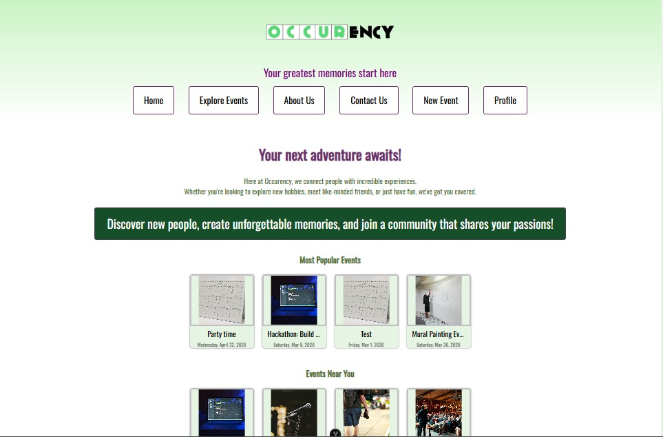

Occurency

Role: Lead UI Designer ┃ Senior Capstone
For my senior Web Application Programming project, I served as Lead UI Designer for Occurency—an intuitive event planning application. Beyond visual aesthetics, I was responsible for bridging the gap between complex back-end data architecture and a seamless front-end experience.
I established the core CSS framework that maintained brand consistency across all user flows, focusing on friction-free navigation and accessible event discovery.